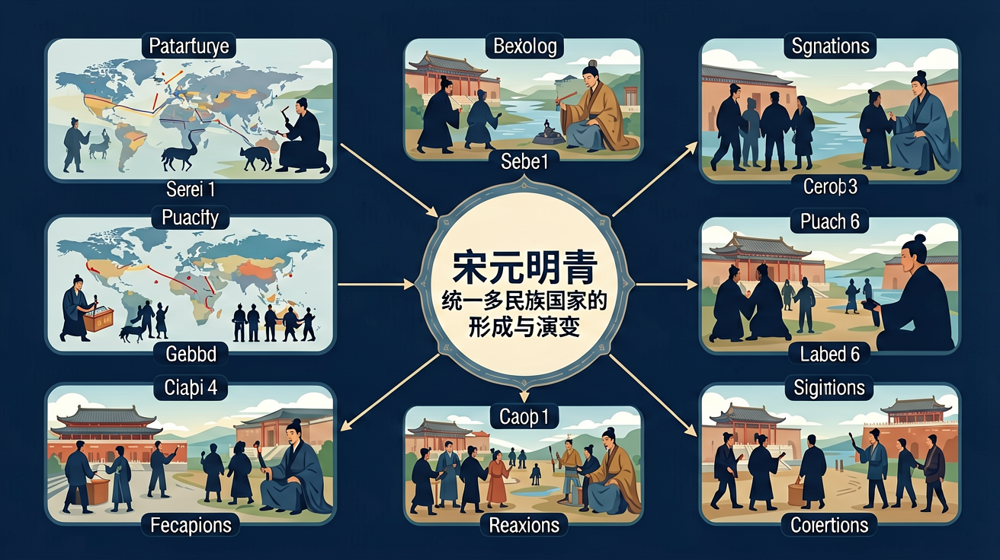

从北宋积弱到康乾盛世，近千年的政权更迭与制度创新——理解统一多民族国家形成的历史脉络

❓ 为什么宋朝经济那么发达却总是打不过北方游牧民族？
❓ 元朝的行省制度和我们现在的省份划分是一回事吗？
❓ 明朝的锦衣卫到底是特务机构还是皇帝保镖？
学完这一课，这些问题你都能自信地回答。
北宋与南宋分界的标志性事件是？
下列哪项是元朝首创的制度？
文字狱：清代大兴文字狱，对涉及"违碍"皇帝的文章、著作严厉追究，制造了大量冤案，严重钳制了思想文化发展。
经济政策与人口增长：清代推行"摊丁入亩"政策，取消人头税，刺激人口增长。乾隆末年，中国人口突破3亿，成为世界第一人口大国。玉米、红薯等美洲作物的推广也促进了粮食产量增加。
闭关锁国：乾隆年间实行"一口通商"政策，仅保留广州一口通商，严格限制中外贸易和文化交流。英国马戛尔尼使团访华（1793 年）寻求扩大贸易，被乾隆帝以"天朝上国"姿态拒绝，中西关系走向了对立。1840 年鸦片战争爆发，中国近代史开端。
📋 将下方历史政策/事件拖拽到对应的朝代方框中。全部答对即可过关！
| 朝代 | 建立时间 | 都城 | 政治特点 | 重大制度创新 | 民族关系 |
|---|---|---|---|---|---|
| 北宋 | 960 年 | 开封（东京） | 重文轻武；文人治国 | 科举制度完善；纸币交子出现 | 辽、宋、西夏并立；澶渊之盟 |
| 南宋 | 1127 年 | 临安（杭州） | 偏安江南；经济繁荣 | 经济重心完成南移；海贸发达 | 宋金对峙；抗金、抗元斗争 |
| 元 | 1271 年（统一 1279） | 大都（北京） | 四等人制度；军事贵族统治 | 行省制度；宣政院管西藏；驿站制度 | 蒙古族建立；西藏正式纳入版图 |
| 明 | 1368 年 | 南京→北京 | 废丞相；厂卫制度；皇权顶峰 | 八股文；一条鞭法（后期）；郑和下西洋 | 汉族重建王朝；郑和外交 |
| 清 | 1644 年 | 北京 | 君主专制顶峰；文字狱 | 驻藏大臣；摊丁入亩；康乾盛世 | 满族统治；奠定中国版图基本框架 |